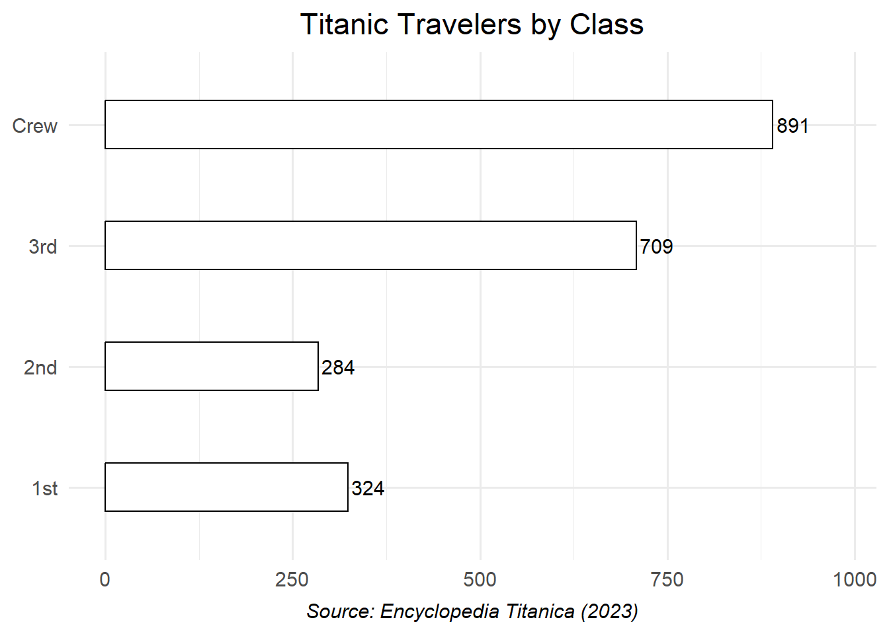
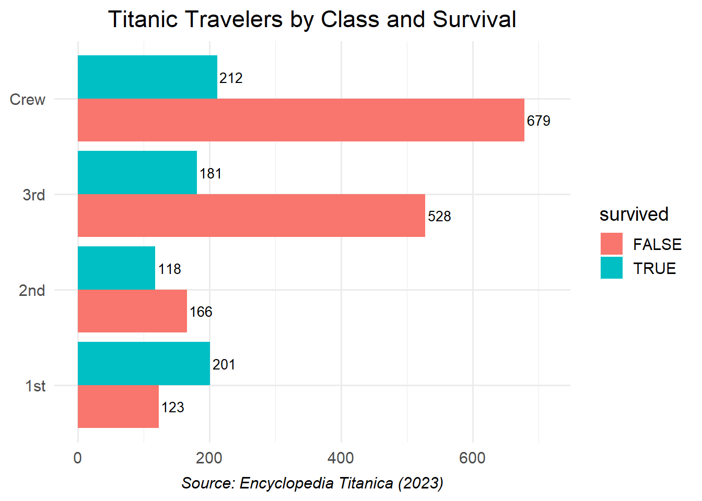
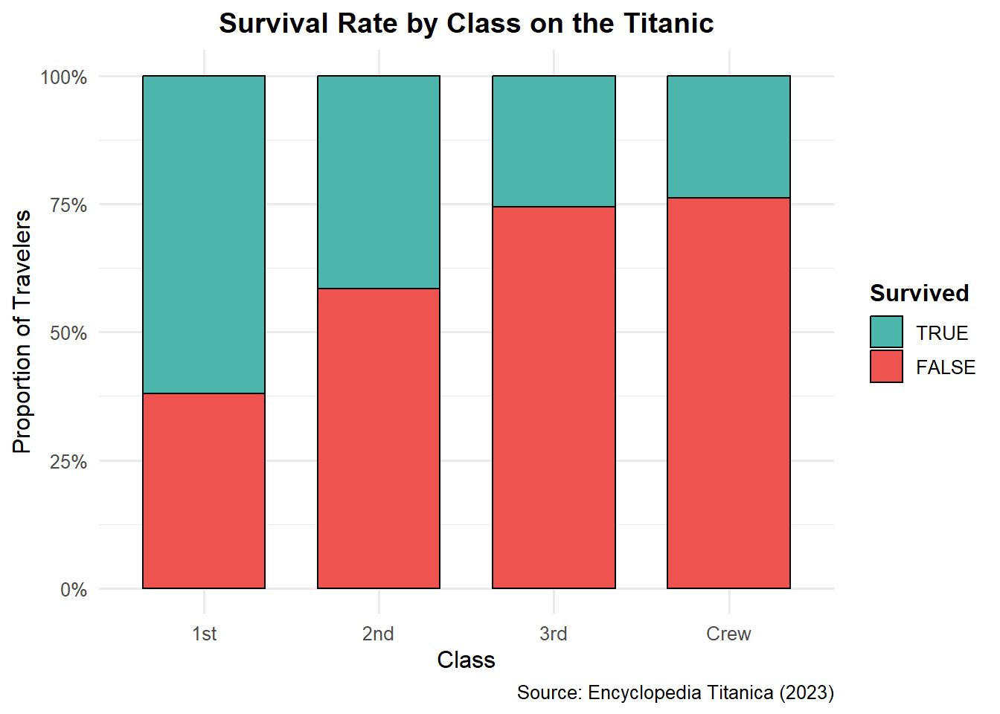

Hew Zhong Xuan, Chuah Chee Jian, Lim Kuan Yong, Tan Ting Xuan Daryl, Kua Dong Han, Chek Yu Ting Amanda
Published
May 19, 2025
Inputting Packages
library(tidyverse)
── Attaching core tidyverse packages ──────────────────────── tidyverse 2.0.0 ──
✔ dplyr 1.1.4 ✔ readr 2.1.5
✔ forcats 1.0.0 ✔ stringr 1.5.1
✔ ggplot2 3.5.2 ✔ tibble 3.2.1
✔ lubridate 1.9.4 ✔ tidyr 1.3.1
✔ purrr 1.0.4
── Conflicts ────────────────────────────────────────── tidyverse_conflicts() ──
✖ dplyr::filter() masks stats::filter()
✖ dplyr::lag() masks stats::lag()
ℹ Use the conflicted package (<http://conflicted.r-lib.org/>) to force all conflicts to become errors
library(ggplot2)library(dplyr)library(ggmosaic)
Visualizing the Distribution of Travelers on the Titanic
df <-read.csv("titanic.csv")
# Count number of travelers by class# (Assume column name is 'Class'. Adjust if needed.)traveler_counts <- df |>count(class) |>mutate(class =factor(class, levels =c("1st", "2nd", "3rd", "Crew")))# Verify the counts and factor levelsprint(traveler_counts)
class n
1 1st 324
2 2nd 284
3 3rd 709
4 Crew 891
Bar Chart of Travelers by Class
ggplot(traveler_counts, aes(x = class, y = n)) +geom_bar(stat ="identity", fill ="white", color ="black", width =0.4) +coord_flip() +geom_text(aes(label = n), hjust =-0.1, size =4) +labs(title ="Titanic Travelers by Class",caption ="Source: Encyclopedia Titanica (2023)",x =NULL, y =NULL ) +theme_minimal(base_size =14) +theme(plot.caption =element_text(hjust =0.5, face ="italic"),plot.title =element_text(hjust =0.5) ) +ylim(0, max(traveler_counts$n) *1.1) # Add space for labels

Dodged Bar Chart of Travelers by Class and Survival
ggplot(df, aes(x = class, fill = survived)) +geom_bar(position =position_dodge(width =0.9)) +geom_text(stat ="count",aes(label = ..count..),position =position_dodge(width =0.9),vjust =0.5,hjust =-0.1,size =3.5) +coord_flip() +scale_fill_manual(values =c("FALSE"="#F8766D", "TRUE"="#00BFC4")) +labs(title ="Titanic Travelers by Class and Survival",caption ="Source: Encyclopedia Titanica (2023)",x =NULL, y =NULL ) +theme_minimal(base_size =14) +theme(plot.caption =element_text(hjust =0.5, face ="italic"),plot.title =element_text(hjust =0.5),legend.position ="right" ) +ylim(0, max(table(df$class)) *0.8) # Adjust ylim to fit the text
Warning: The dot-dot notation (`..count..`) was deprecated in ggplot2 3.4.0.
ℹ Please use `after_stat(count)` instead.

Mosaic Plot
p <-ggplot(data = df) +geom_mosaic(aes(weight =1, x =product(class), fill = survived), na.rm =TRUE) +scale_fill_manual(values =c("FALSE"="#F8766D", "TRUE"="#00BFC4")) +labs(title ="Titanic Travelers by Class and Survival",caption ="Source: Encyclopedia Titanica (2023)",x ="Class", y ="Survived" ) +theme_minimal(base_size =14) +theme(axis.text.y =element_blank(),axis.ticks.y =element_blank(),plot.caption =element_text(hjust =0.5, face ="italic"),plot.title =element_text(hjust =0.5) )# Extract plot data for labelingplot_data <-ggplot_build(p)$data[[1]]
Warning: The `scale_name` argument of `continuous_scale()` is deprecated as of ggplot2
3.5.0.
Warning: The `trans` argument of `continuous_scale()` is deprecated as of ggplot2 3.5.0.
ℹ Please use the `transform` argument instead.
Warning: `unite_()` was deprecated in tidyr 1.2.0.
ℹ Please use `unite()` instead.
ℹ The deprecated feature was likely used in the ggmosaic package.
Please report the issue at <https://github.com/haleyjeppson/ggmosaic>.
# Compute label positions (center of each tile)label_positions <- plot_data %>%mutate(x = (xmin + xmax) /2,y = (ymin + ymax) /2,count = .n # Use actual numeric count )# Add labels with numeric countsp +geom_text(data = label_positions,aes(x = x, y = y, label = count),size =4,color ="black")
Pros and Cons of Mosaic Plots
Advantage of using the mosaic plot (Figure 3):
- The mosaic plot provides a clear visualization of the proportionate relationships between multiple categorical variables simultaneously. It allows for an intuitive understanding of the joint distribution and interactions among variables (e.g., survival status, class, and gender) in a single plot, showing relative frequencies through area size.
Disadvantage of using the mosaic plot (Figure 3):
- The mosaic plot can be more difficult to interpret quantitatively compared to the dodged bar chart, especially for viewers unfamiliar with this type of visualization. It may be harder to accurately compare specific category counts or proportions because the area sizes can be less straightforward to judge than the lengths of bars in a dodged bar chart.
Alternate Visualization
# For TRUE on top, make survived factor levels c("TRUE", "FALSE")df <- df |>mutate(class =factor(class, levels =c("1st", "2nd", "3rd", "Crew")),survived =factor(survived, levels =c("TRUE", "FALSE")) # TRUE will be top segment )
ggplot(data=df, aes(x = class, fill = survived)) +geom_bar(position ="fill", color ="black", width =0.7) +scale_y_continuous(labels = scales::percent_format(), name ="Proportion of Travelers") +scale_fill_manual(name ="Survived",values =c("TRUE"="#4DB6AC", "FALSE"="#EF5350"),labels =c("TRUE", "FALSE") ) +labs(title ="Survival Rate by Class on the Titanic",x ="Class",caption ="Source: Encyclopedia Titanica (2023)" ) +theme_minimal(base_size =12) +theme(plot.title =element_text(hjust =0.5, face ="bold"),legend.title =element_text(face="bold") )

100% Stacked Bar Chart of Survival Rate by Class. This chart shows the proportion of survivors and non-survivors for each travel class.
✅ Advantages of the VStacked Bar Chart
Clear Rate Comparison: The 100% stacked bar chart excels at showing proportions or rates. It makes it very easy to compare the survival rate (percentage of survivors) across the different passenger classes. For example, one can immediately see that 1st class had a much higher survival rate than 3rd class or the Crew.
Space Efficiency: Like other stacked bar charts, it’s relatively space-efficient for displaying multiple categories and their internal composition.
⚠️ Limitations
Loss of Absolute Counts: The primary limitation is that it obscures absolute numbers. While you can see the proportion of survivors in 1st class was high, you cannot tell from this chart alone how many 1st class passengers there were in total, or the actual number of survivors. This information is readily available in the dodged bar chart (Figure 2) and can be inferred (with labels) from the mosaic plot (Figure 3).
Comparison within Segments: Comparing the absolute size of a specific segment (e.g., non-survivors) across classes can be difficult if the total numbers per class vary greatly, as the bars are all normalized to the same height.